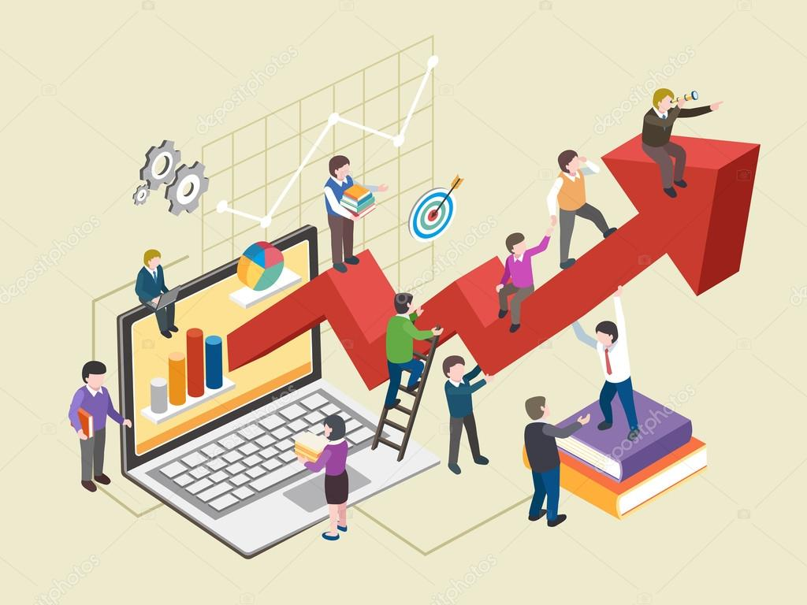

Energia limpa é um meio de produção de energia que não libera poluição e que tem pouco ou nenhum impacto ambiental. Dessa maneira, a energia limpa é uma fonte de energia que traz poucos danos ao planeta.
Fontes de Energia Limpa
Energia Solar: A energia solar, também conhecida como energia solar fotovoltaica, utiliza a luz solar para gerar eletricidade para casas e indústrias.
Energia Eólica: Utiliza os ventos para produzir energia cinética e, posteriormente, eletricidade por meio de turbinas, chamadas de aerogeradores. O vento gira as pás e esse movimento é transformado em eletricidade, podendo ser distribuída para empresas e cidades.
Energia Hidrelétrica: Utiliza a força da água para a geração de energia. Uma das mais conhecidas é a usina de Itaipu, na fronteira do Brasil com o Paraguai. Por meio de uma Central Hidrelétrica, o curso da água movimenta turbinas e esse movimento é transformado em eletricidade.
Vantagens de Usar Energia Limpa
Um dos benefícios é a ausência de emissão de poluentes, que são causadores de diversos impactos ambientais para o planeta e para a saúde da população. Por isso, a energia limpa faz com que os danos ao meio ambiente sejam reduzidos, sem que a demanda por energia deixe de ser atendida.
Desvantagens de Usar Energia Limpa
São os altos custos envolvidos nesse tipo de fonte energética, que ainda não é popular no planeta. Os valores relacionados a painéis solares, turbinas eólicas e flutuadores são mais altos do que aqueles utilizados na geração de energia em combustíveis fósseis.
Conclusão
A energia limpa é muito importante para o nosso cotidiano, pois é a que menos polui. No entanto, apresenta desvantagens, como o alto custo de materiais como placas solares e turbinas.
Trabalho Decente e Crescimento Econômico
O trabalho é essencial para o ser humano, pois ele nos ajuda na alimentação, lazer e saúde. Por isso, é fundamental que tenhamos um salário que permita termos o essencial para vivermos, promovendo também o crescimento econômico.
Empresas e funcionários devem trabalhar juntos para alcançar um trabalho decente e o crescimento econômico. Isso pode ser promovido através da geração de trabalho digno, da formalização, do crescimento das micro, pequenas e médias empresas, do empreendedorismo e da inovação.
Além disso, é crucial promover a igualdade salarial entre os sexos, criar oportunidades de emprego para os mais jovens e pessoas com deficiências, erradicar o trabalho forçado e a escravidão moderna, combater o tráfico de pessoas e assegurar a proibição do trabalho infantil em todas as suas formas.
Portanto, é essencial que haja um trabalho conjunto entre a população para garantir empregos dignos e sem desigualdade, proporcionando assim um crescimento econômico com novas oportunidades para empreendedores e ajudando a combater o desemprego.

Indústria, Inovação e Infraestrutura
Conhecida como os três ís, diz respeito à construção de industrialização sustentável e maior apoio à inovação.
É necessário muito investimento em infraestrutura e inovação, duas palavras extremamente importantes no que diz respeito ao crescimento econômico.
Para que isso aconteça é necessário um investimento nos países pobres que não têm tanto acesso a meios essenciais em nossas vidas modernas, como a internet. Segundo levantamento da ONU, 4 bilhões de pessoas não têm acesso à internet.
As indústrias estão cada vez mais modernas, trabalhando com computadores, tablets, softwares e robôs, auxiliando melhor a vida do ser humano.
Devemos também ter meios sustentáveis nas indústrias para ajudar a não poluir, implantando ventilação natural e luz natural, como fez a empresa Engepoli no projeto Skylux utilizado no centro de distribuição da Coca-Cola, reduzindo a luz artificial.
Ou seja, devemos adequar nossas indústrias a inovar e, ao mesmo tempo, pensar em proteger o meio ambiente.